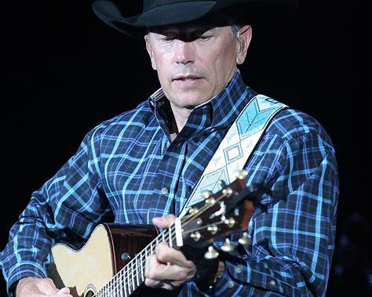
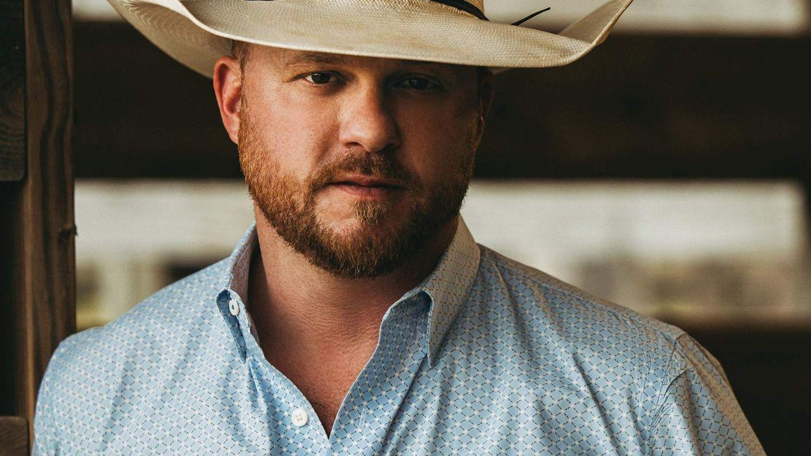
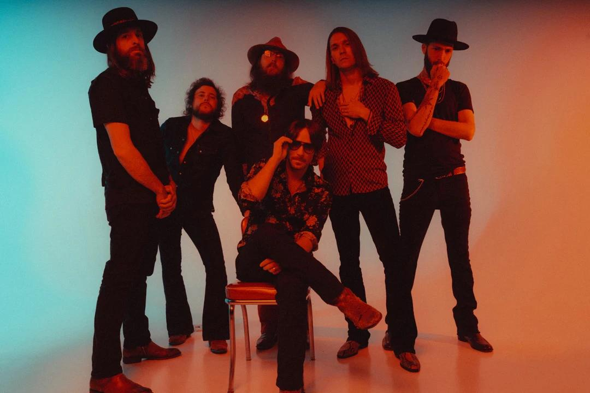
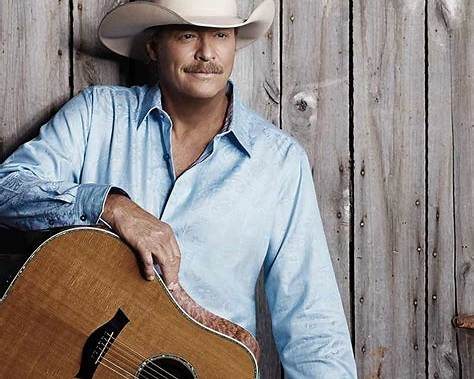
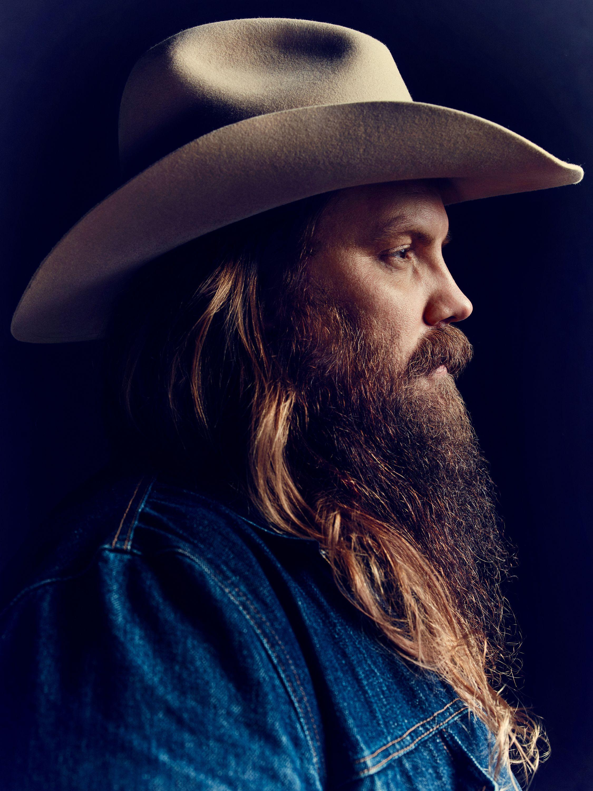
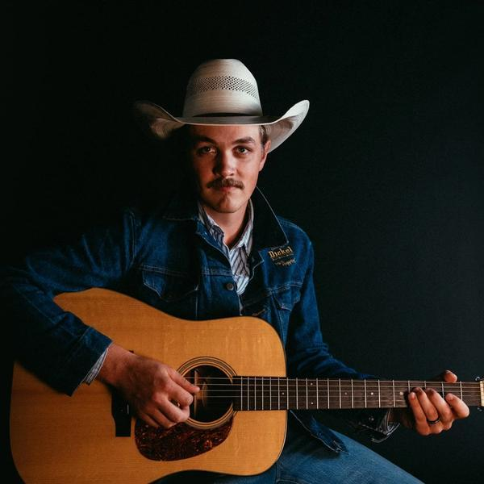
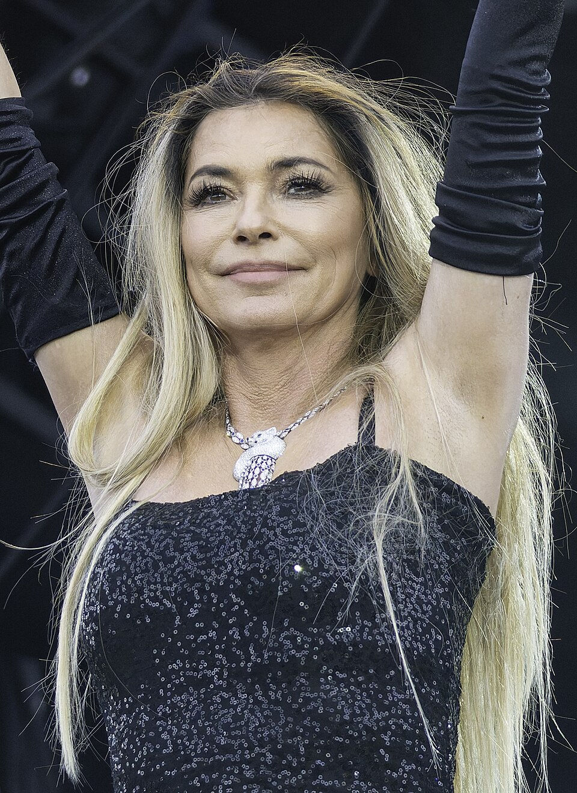
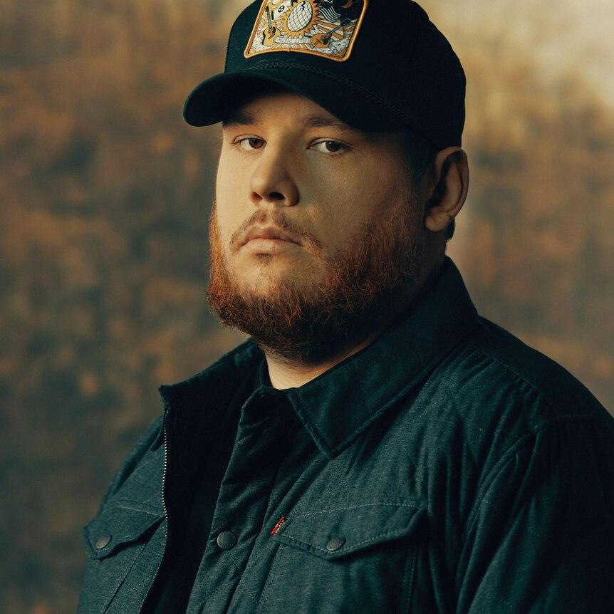

22h30 · Palco Estrada
George Strait
Uma das maiores referências da história da música country.
Oito atrações em três noites, divididas entre o Palco Estrada e o Palco Rancho.
Sexta-feira

Uma das maiores referências da história da música country.

Country contemporâneo construído sobre raízes tradicionais.

Country e southern rock abrem a primeira noite do festival.
Sábado

Clássicos que atravessaram décadas e ajudaram a definir o gênero.

Uma das vozes mais marcantes da geração atual do country.

Uma nova geração inspirada pelo country tradicional dos anos 90.
Domingo

Uma das artistas mais reconhecidas da história do country encerra o festival.

Grandes sucessos de uma das principais vozes do country atual.